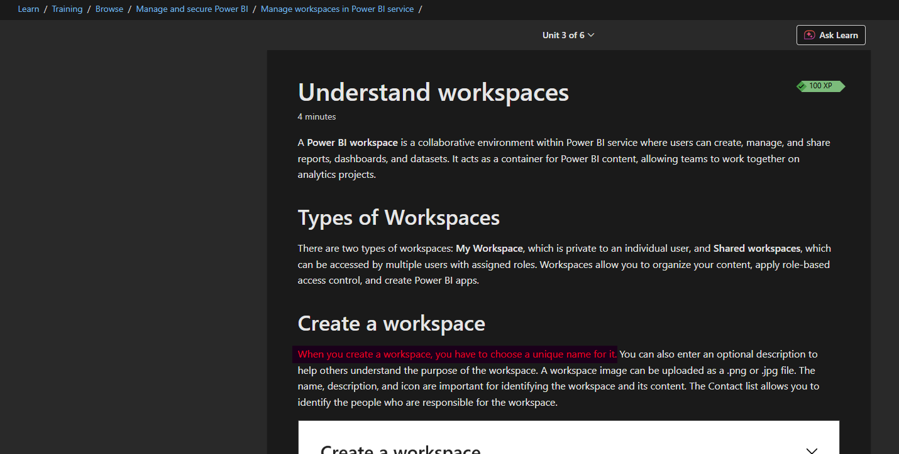

Context
We deploy our Power BI reports to various different customers. We had built out this infrastructure on the belief that a single customer only had one Production Power BI workspace.
It was discovered that some customers have multiple production workspaces and so the investigation was to understand whether this would have any impact on how we deploy. And if so, what are the details?
Problem
The deployment infrastructure for Analytics was based on the assumption that the customer only ever has one Production environment. It has come to light recently that this is not always the case and some customers have more than one Production environment.
How do we deal with this from a deployment perspective? We have dealt recently with a similar scenario involving the two demo environments for UK and US so could we learn anything from that?
Specifically the questions raised based on this are as follows:
- If we have one Power BI app for multiple environments what, if any, impact is there on app IDs or links to core records from the reports?
- How does the sitemap work in core? How does the Power BI app get embedded? Would multiple production environments cause a problem?
Backend Caveat
It was agreed that this was not the area of focus for this spike. In Azure Dev Ops, the releases use variables which are hardcoded prior to set up and so can be changed to the correct environment on a case by case basis.
Power BI Deployment
The customer would have one Power BI tenancy but within that tenancy what is the art of the possible?
Power BI Workspaces
One tenancy can have multiple workspaces which can be thought of as folders containing objects such as reports, apps, dashboards etc. ringfenced from other workspaces. Each workspace must have a unique name across the tenancy.
A workspace can only have one Power BI app and an app can only contain objects from within the workspace it resides in.
It is possible to have multiple apps in the tenancy (each one in a different workspace). It is equally possible to have two apps with the same name in the situation that they exist in different workspaces.
Contrary to the backend, it is not the name of these objects which is used to lookup and find the correct object. Instead it is their IDs which are used when interacting with the Power BI API and also used to create the URLs where the reports are hosted in the Power BI service. We use AppID, WorkspaceID and ReportID above all else. So even in the instance that apps are named the same their AppIDs will differ.
Core Embedding
This works because when a user clicks on the Analytics button, the Javascript creates the Power BI app URL on the fly using reportID and AppID which it obtains from one of the tables in Core (environmentvariablevalue). The relevant IDs are entered as an array into the value column of this table and then the relevant value(s) parsed / isolated when the button is clicked.
(Technically the Javascript also takes note of the context of the current page where the button was clicked and this is passed as a filter when opening the report. This is how / why the Client report opens restricted to the client which we were looking at in Core when we clicked the button.)
Summary
I feel like the extra technical implementation and maintenance required to do something clever in combining environments within workspaces and/or apps would probably outweigh the potential benefits from doing this work. Instead I think this would work best and most cleanly and clearly if each production environment for a given customer is treated almost as a separate customer deployment.
Suggested Workflow
1) We would create different workspaces in the same Power BI tenancy for each production environment. They would be uniquely named.
2) The ADF environments would also be kept separate and the variables for workspace names / URL would be set differently for each instance and point to the relevant workspace from 1).
3) Deployments to these various workspaces would be via the relatively new Powershell script (so updating the reports would be automatic).
4) Each of these workspaces would have its own uniquely named Power BI app. As now, these would need to be manually updated during deployments to reflect any changes in the underlying reports.
5) As now, access to each of these apps would be via audiences (and RLS). Even if a given user needs access to more than one of these apps, I think this can be done and having the apps uniquely named will help that user identify what environment they are looking at.
Related Questions
What impacts are there on appIDs and links to records in Core if one app for multiple environments?
The key is that an app can only contain content from the same workspace that it has been created in. Given this constraint, the only way that one app can be used for multiple environments is if all the reports for those multiple environments exist in one workspace. I wouldn't recommend this as it would be a maintenance headache. Combining reports connected to different production environments in one workspace would require duplicating reports within that workspace increasing complexity and risk.
How does the site map work in Core?
In the environmentvariablevalue table in Core there is a column called value. This holds the array containing the IDs required for the relevant Power BI App and this information is obtained via Javascript when the Analytics button is pressed by the user.
Can one Power BI tenant have 2 workspaces with the same name?
No. Workspaces must be uniquely named within a tenancy:

Can two Power BI apps have the same name? What happens if they're in the same environment?
Two Power BI apps within the same tenancy could technically be given the same name. The recommendation is to provide unique names to avoid user, developer and Power BI Admin confusion because developers and Power BI Admins (and potentially some users too) would have access to multiple workspaces and therefore multiple apps.
Could we combine multiple production environments into one SQL database?
This might be an avenue worth exploring however does come with its own issues:
- Would the user-base want to see the data in the reports aggregated over all environments like this? If not, we could in theory use one SQL database to feed reports which are limited to one environment by filtering by environment in Power Query, assuming we have a way in SQL to identify which environment the records come from (we currently don't have this).
- We would need to bring in the different environment base URLs so links to the core records would still work correctly from the reports.
- Can we ensure uniqueness when appending records from different production environments into the database? Or would we break referential integrity when combining records from different environments?
- Would there be storage / performance implications from having potentially a very large dataset in SQL and/or Power BI?
If this was a route we were to go down, I think most of these questions might need spikes of their own in order to investigate feasibility.
What Happened Next?
This was a proactive risk-avoidance spike. The team were satisfied that we could treat one customer with multiple production environments almost as separate customers so had a way forward.